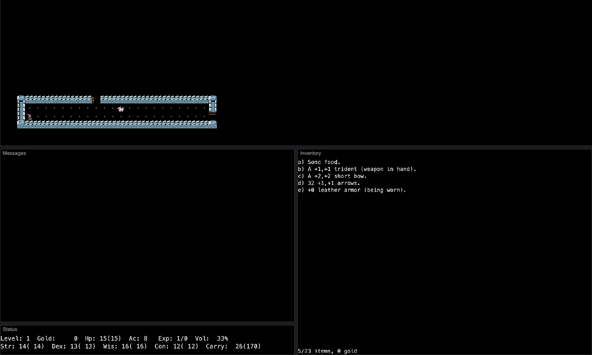
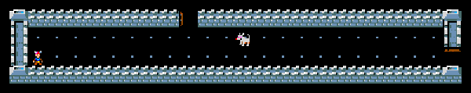
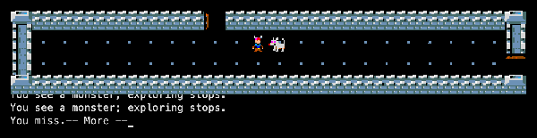
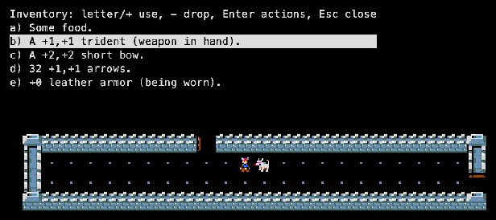

CreatorRobert D. Kindelberger and Bell Labs colleagues
LanguageC ~17,200 lines
PlatformUnix + curses AT&T / BSD
Lineage
Super-Rogue is built directly on the Rogue 3.6 source. A group at AT&T Bell Labs grew it between 1982 and 1983, with Robert D. Kindelberger as its public face; versions 6.5 to 9.0 went round until July 1984. Kindelberger released the source in 2004.
Its ideas (stats beyond strength, weight, trading posts) went on into Advanced Rogue, which drew on both Rogue 3.6 and Super-Rogue. See the family tree.
Credits
Robert D. Kindelberger
Author, released the source in 2004
Bell Labs colleagues
Co-developers (1982–84)
Michael Toy, Glenn Wichman, Ken Arnold
Original Rogue 3.6
Roguelike Restoration Project
Keeps release 9.0-1 (srogue @ c693810)
Screenshots

No title screen: you start right in the dungeon. Note the four stats and the carry limit in the status line.

First steps: a long room and the first jackal.

A fight: “You miss.”

Inventory: a trident, a bow and elf-crafted leather armour.
Trivia
Super-Rogue was written by a group at AT&T Bell Labs, the home of Unix, between 1982 and 1983. (RogueBasin)
The source stayed private for twenty years; Kindelberger released it in 2004. (RogueBasin)
When no other monster fits the level, the game sends the arch-devil Asmodeus, and a scroll of genocide won't touch him: “You cannot genocide Asmodeus !!” (source: monsters.c)
Magic pools let you dip items for good or bad effects, and you can drown in them: “Oh no!!! You drown in the pool!!!” (source: move.c)
What's unique
Four stats: strength, dexterity, wisdom and constitution, and a carry limit by weight.
Twice the bestiary: a second alphabet of monsters (anhkheg, cockatrice, bone devil, elasmosaurus, …) on top of Rogue's 26.
Trading posts to buy and sell, maze levels, and magic pools to dip items in.
A deeper goal: the Amulet of Yendor appears no earlier than level 35.
Code dive
Language: K&R C, about 17,200 lines. All monsters and items are tables in global.c.
Environment: AT&T Unix at Bell Labs, VT-style terminals, curses.
Wizard mode: -w and a password, or -a for the author's own account.
This port: fixes for undeclared functions and 4-byte vs 8-byte longs in the save file; X11 and WebAssembly frontends. Source: memmaker/srogue.
Stats
Thing
Count
Notable ones
Classes
1
A fighter; stats vary per character.
Monsters
53
Rogue 3.6’s 26 plus 26 new ones (cockatrice, bone devil, elasmosaurus, killer frog, titanothere, vrock, wuccubi, demon prince Yeenoghu) and Asmodeus.